전파전자기능사(구) (2004-02-01 기출문제)
1과목: 임의 구분
1. 간접 위상변조에서 주파수 변조기 전단에 어떤 회로를 두어 위상 변조파를 얻는가?
- 발진회로
- 적분회로
- 미분회로
- 증폭회로
(정답률: 알수없음)

2. FM 전파를 수신할 때 그 전파가 약하거나 0일때 수신기의 출력에 큰 잡음이 나타나는 것을 제거하기 위하여 사용하는 회로명은?
- 트랩회로
- BFO
- 스켈치회로
- 디엠파시스회로
(정답률: 알수없음)
3. λ/4 수직접지 안테나의 수직면내의 지향 특성은?
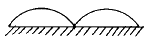
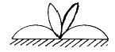
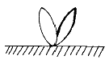
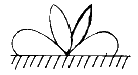
(정답률: 알수없음)
4. 주파수 1[㎒]용 λ/4 수직 안테나의 실효고는? (단, 광속도는 3 × 108[m/sec]이다.)
- 18(m)
- 28(m)
- 38(m)
- 48(m)
(정답률: 알수없음)
5. 안테나에 반사기를 붙이는 가장 적합한 이유는?
- 광대역 통신을 하기 위하여
- 일정한 방향으로 전파를 복사하기 위하여
- 급전선과의 정합을 시키기 위하여
- 송신기 출력관의 양극손실을 적게 하기 위하여
(정답률: 알수없음)
6. FM수신기에서 주파수변별회로의 특성을 측정하는 요령은?
- 입력전압의 크기에 대한 출력전압의 주파수 변화를 구한다.
- 입력전압의 주파수 변화량에 대한 출력전압의 주파수 크기를 구한다.
- 입력전압의 크기에 대한 출력전압 크기를 구한다.
- 입력전압의 주파수 변화량에 대한 출력전압의 크기를 구한다.
(정답률: 알수없음)
7. 다음 그림은 FM 수신기의 감도 측정 구성도이다.
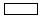
에 알맞는 것은?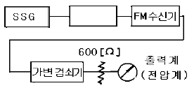
- 저항 감쇠기(ATT)
- 가변저주파 발진기
- 의사 공중선(dummy antenna)
- 중간 주파 증폭기
(정답률: 알수없음)
8. 어떤 전원 정류기에서 그 전압 변동률이 전부하로 20[%]였다. 지금 전 부하의 출력전압이 250[V]일때 무부하 전압은?
- 500[V]
- 475[V]
- 312[V]
- 300[V]
(정답률: 알수없음)
9. AM 송신기에서 발진 주파수의 변동이 발생한 경우 그 원인과 관계 적은 것은?
- 발진기의 온도변화
- 발진기의 부하변동
- 전력 증폭관의 불량
- 전원 전압의 변동
(정답률: 알수없음)
10. 어느 안테나에 5[A]의 전류를 흘렸더니 300[W]의 복사전력이 생겼다. 복사 저항은?
- 150[Ω]
- 60[Ω]
- 24[Ω]
- 12[Ω]
(정답률: 알수없음)
11. 그림은 기본적인 무선전화 송신기의 구성도이다. A부분에 들어가야 할 것은?
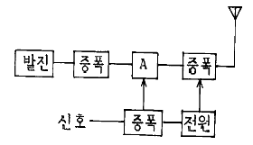
- 변조
- 검파
- 체배
- 완충
(정답률: 알수없음)
12. FM 송신기측에서 S/N비를 개선하기 위하여 변조시 높은쪽 변조 주파수를 특히 강조하여 보낸 FM파를 억제하는 회로가 FM수신기에는 필요하게 된다. 이 회로를 무엇이라고 하는가?
- 디 엠파시스회로
- 프리 엠파시스회로
- 주파수 변별회로
- 스켈치회로
(정답률: 알수없음)
13. 진폭변조파의 주파수 스펙트럼 상에 존재하지 않는 성분은?
- 상측파 성분
- 하측파 성분
- 중측파 성분
- 반송파 성분
(정답률: 알수없음)
14. TV 브라운관의 전자빔을 수직 또는 수평으로 편향시키는데 필요한 파형은?
- 펄스파
- 사인파
- 톱날파
- 구형파
(정답률: 알수없음)
15. 희망하는 주파수를 불필요한 다른 전파들로부터 어느 정도 분리시켜 선택할 수 있는가 하는 능력을 무엇이라 하는가?
- 감도
- 선택도
- 충실도
- 잡음지수
(정답률: 알수없음)
16. 통신 위성에서 필요로 하는 전력은 보통 무엇에 의해 공급되는가?
- UPS
- 축전지
- 태양전지
- 실리콘 정류기
(정답률: 알수없음)
17. 우리별 위성을 통하여 수행할 수 있는 업무가 아닌 것은?
- 지구 영상 실험
- 직접 위성 방송
- 무선 패킷 통신
- 디지털 신호 처리 실험
(정답률: 알수없음)
18. 페이딩(fading)의 방지책으로 틀린 것은?
- AVC
- AGC
- AFC
- 다이버시티 수신방식
(정답률: 알수없음)
19. 위성통신의 특징이 아닌 것은?
- 통신용량이 크다.
- 전송오류율이 작다.
- SHF주파수를 사용한다.
- 고품질의 협대역 통신이 가능하다.
(정답률: 알수없음)
20. AM송신기의 전력 측정방법이 아닌 것은?
- 의사공중선
- 수부하에 의한 방법
- 양극 손실에 의한 방법
- C-M 전력 계법
(정답률: 알수없음)
2과목: 임의 구분
21. 다음 문장의 ( )안에 가장 적합한 것은?
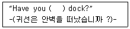
- started
- go
- depart
- left
(정답률: 알수없음)
22. 다음 문장을 가장 옳게 영역한 것은?
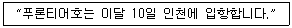
- The frontier will enter Inchon on the 10th of this month.
- The frontier will enter Inchon at the 10th of this month.
- The frontier will enter Inchon for the 10th of this month.
- The frontier will enter Inchon in the 10th of this month.
(정답률: 알수없음)
23. 숫자 통화표에 의한 " O "의 발음 표기는?
- NADAZERO
- NONE
- ZERO
- OZERO
(정답률: 알수없음)
24. 다음 문장의 ( )안에 가장 적합한 것은?
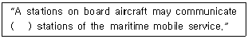
- with
- in
- of
- at
(정답률: 알수없음)
25. 다음 무선전보 약어의 뜻은?
- 경도
- 비상
- 청수
- 경계
(정답률: 알수없음)
26. 다음 문장을 옳게 국역한 것은?
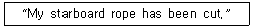
- 이곳의 좌현의 예인 로우프는 절단되었다.
- 이곳의 우현의 예인 로우프는 절단되었다.
- 이곳의 선수의 예인 로우프는 절단되었다.
- 이곳의 선미의 예인 로우프는 절단되었다.
(정답률: 알수없음)
27. 전보 보통문에 사용 되는 약어의 뜻이 틀린 것은?
- L/A : 인가장
- B/L : 대금인환
- L/C : 신용장
- C/F : 운임보험료(매주부담)
(정답률: 알수없음)
28. LACE의 각문자를 Phonetic Alphabet Code for Radio Correspondence에 의한 각 문자의 발음법 사용단어로 잘못된 것은?
- LIDO
- ALFA
- CHARLIE
- ECHO
(정답률: 알수없음)
29. 다음 문장의 ( )속에 알맞는 단어는?
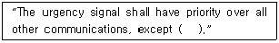
- alarm
- safety
- distress
- message
(정답률: 알수없음)
30. 다음 밑줄친 부분과 같은 뜻을 가진 것은?
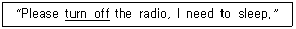
- change of
- stop
- listen to
- slow down
(정답률: 알수없음)
31. 다음 중 용어의 뜻이 틀린 것은?
- frequency tolerance - 주파수 허용 편차
- superfluous signals - 혼신 신호
- survival craft station - 구명 부기국
- alarm signal - 경보 신호
(정답률: 알수없음)
32. 다음 문장의 밑줄친 부분의 뜻은?
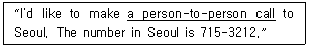
- 지명통화
- 예약통화
- 수신인불통화
- 요금통화자전화
(정답률: 알수없음)
33. 다음 문장의 ( )안에 가장 적합한 것은?
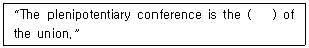
- top system
- structure
- supreme
- council
(정답률: 알수없음)
34. 다음 문장 중 ( )안에 알맞는 것은?
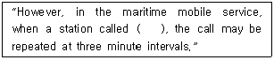
- can not appear
- dose not reply
- will not receive
- could not send
(정답률: 알수없음)
35. ITU 의 최고의결기관은?
- World Telecommunication Conference
- Radio Communication Bureau
- World Conference International Communication
- Plenipotentiary Conference
(정답률: 알수없음)
36. 다음 문장의 ( )안에 적합한 것은?
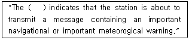
- safety signal
- distress signal
- alarm signal
- urgency signal
(정답률: 알수없음)
37. 다음 문장의 ( )에 가장 적합한 것은?
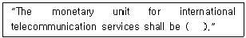
- the gold franc
- the dollar
- the yen
- the pound
(정답률: 알수없음)
38. 다음 문장의 ( )안에 가장 적합한 것은?
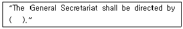
- a Secretary-General
- a Council
- an Administration
- a Coordination-Committee
(정답률: 알수없음)
39. ( )에 들어갈 가장 적절한 단어를 고르시오.
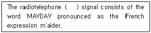
- urgency
- rescue
- distress
- safety
(정답률: 알수없음)
40. ( )에 들어갈 가장 적절한 문장을 고르시오.
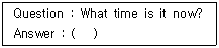
- Please take your time.
- That's good.
- Take an easy.
- It's six thirty.
(정답률: 알수없음)
3과목: 임의 구분
41. 무선 종사자의 자격을 취소 또는 정지하는 경우가 아닌 것은?
- 전파법에 의한 명령이나 처분에 위반한 때
- 부정한 방법으로 자격을 취득한 때
- 무선 종사자의 자격을 허위로 교부받은 때
- 정당한 사유없이 계속하여 10년 이상 무선국에 종사한 경력이 없을 때
(정답률: 알수없음)
42. 실험국 허가의 유효기간은 몇 년인가?
- 1년
- 2년
- 3년
- 4년
(정답률: 알수없음)
43. 무선국 허가의 신청서를 수리한 때, 허가의 적부를 심사하는 내용이 아닌 것은?
- 당해 업무를 유지할 만한 조직구성 및 재정이 확보되어 있을 것
- 공사 설계가 법이 정하는 기술기준에 적합할 것
- 대통령령이 정하는 무선국 개설기준에 합치할 것
- 주파수지정이 가능할 것
(정답률: 알수없음)
44. 규격전력의 설명으로 가장 타당한 것은?
- 무변조시의 종단 진공관에서 공급되는 전력
- 공중선계의 급전선에 공급되는 전력
- 송신장치의 종단증폭기의 정격출력
- 통상동작 중의 송신기에서 공중선계의 급전선에 공급되는 전력
(정답률: 알수없음)
45. 위성통신기술을 선박의 조난, 안전통신업무에 도입한 전세계적인 해상의 조난 및 안전통신제도는?
- GMDSS
- INMARSAT
- ITU
- ITTT
(정답률: 알수없음)
46. 조난의 경우 사용하는 조난주파수가 아닌 것은?
- 410㎑
- 500㎑
- 2182㎑
- 156.8㎒
(정답률: 알수없음)
47. 통신보안의 목적은 무엇인가?
- 통신내용을 도청분석하는 것이다.
- 통신내용의 도청분석을 방지하는 것이다.
- 통신운용을 원활하게 하는것이다.
- 전파관리를 철저히하는 것이다.
(정답률: 알수없음)
48. 통신보안에 있어 가장 적합한 내용은?
- 음성적 행위이다.
- 국가보안에 중대한 공헌을 한다.
- 방대한 예산과 많은 인력이 소요된다.
- 효과 측정이 용이하다.
(정답률: 알수없음)
49. 다음 중 가장 보안도가 높은 통신수단은 어느 것인가?
- 신호통신
- 우편통신
- 전령통신
- 전기통신
(정답률: 알수없음)
50. 방향 탐지의 목적은 무엇인가?
- 전파의 질을 조사하기 위한 것이다.
- 전파가 도달하는 범위를 알아내기 위한 것이다.
- 통신소의 위치를 알아내기 위한 것이다.
- 전파 형식을 알아내기 위한 것이다.
(정답률: 알수없음)
51. 다음중 국제 전기 통신 연합의 최고 기관은?
- 전권위원회의
- 사무국
- 전파통신총회
- 조정위원회
(정답률: 알수없음)
52. 전기통신에 대한 기술협력과 지원활동의 임무는 어디에서 수행하는가?
- 전권위원회의
- 전파통신분야
- 전기통신표준화분야
- 전기통신개발분야
(정답률: 알수없음)
53. 전파법과 전파에 관한 조약간의 관계는?
- 국내법이 우선한다.
- 전파법과 조약은 동등하다.
- 조약에 따로 규정이 있을 때는 조약이 우선한다.
- 관계기구의 유권해석에 따른다.
(정답률: 알수없음)
54. 암호, 음어, 약호 및 통신운용상 필요한 통신제원과 통신장비를 무엇이라고 하는가?
- 비밀자재
- 보안자재
- 통신자재
- 통제자재
(정답률: 알수없음)
55. 다음 중 공용어와 업무용어에 해당하지 않는 것은?
- 영어
- 일본어
- 아랍어
- 스페인어
(정답률: 알수없음)
56. 다음 중 선박국이 그 선박이 소재하는 해안국의 통신권에 출입하는 경우 통지하지 않아도 되는 경우는?
- 운용의무시간이 없는 선박국이 폐국하고자 할 때
- 그 선박이 소재하는 통신권의 해안국이 청취하는 주파수의 전파를 가지지 아니하는 경우
- 정부 또는 공공단체의 선박국으로서 그 선박의 행동을 비밀로 할 필요가 있는 경우
- 정기선의 선박국으로서 그 선박이 정시에 입출항하는 경우
(정답률: 알수없음)
57. ITU의 헌장과 협약 및 업무규칙에 의한 의무이행에 책임을 지는 정부의 부처 또는 기관을 무엇이라 하는가?
- 이사회
- 책임기관
- 주관청
- 공인되지 않은 운용기관
(정답률: 알수없음)
58. 통신보안의 3대 수단은 무엇인가?
- 송신보안, 자재보안, 시설보안
- 자재보안, 문서보안, 인원보안
- 자재보안, 송신보안, 암호보안
- 송신보안, 암호보안, 인원보안
(정답률: 알수없음)
59. 스퓨리어스 발사에 포함되지 않는 것은?
- 고조파 발사
- 점유 주파수 대폭
- 기생 발사
- 상호 변조적
(정답률: 알수없음)
60. 통신보안의 2차적 책임이라 할 수 있는 것은?
- 통신 이용자의 책임을 말한다.
- 통신이용의 지휘책임을 말한다.
- 통신문의 기안책임을 말한다.
- 통신문의 분류책임을 말한다.
(정답률: 알수없음)